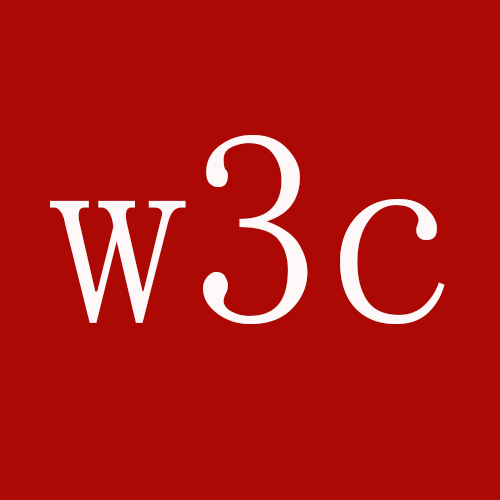

The Scream by Edward Munch. Painted in 1893.
WWF's goal is to:
Build a future where people live in harmony with nature.
We hope they succeed.
For 50 years, WWF has been protecting the future of nature. The world's leading conservation organization, WWF works in 100 countries and is supported by 1.2 million members in the United States and close to 5 million globally.
This is a paragraph.
This is another paragraph.
This is a link This is a paragraph.
This is a paragraph.
This is
a para
graph with line breaks
He named his car The lightning, because it was very fast.
My favorite color is blue red!
(defun our-copy-list (lst)
(if (atom lst)
lst
Text in a pre element is displayed in a fixed-width font, and it preserves both spaces and line breaks